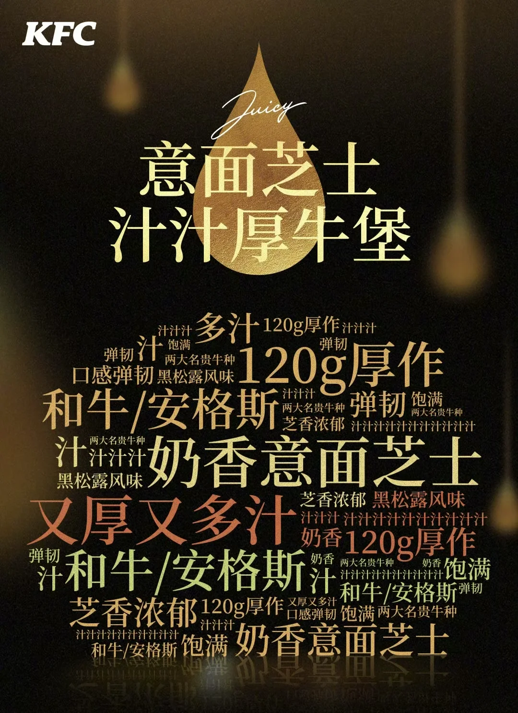
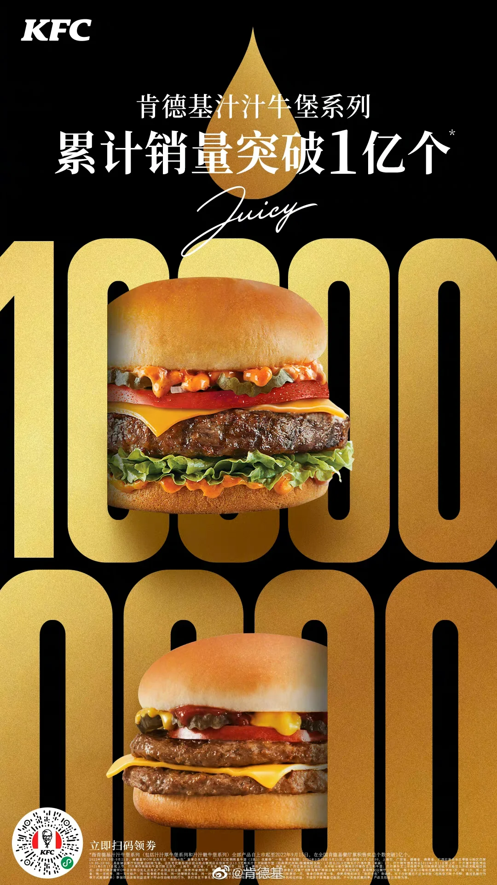
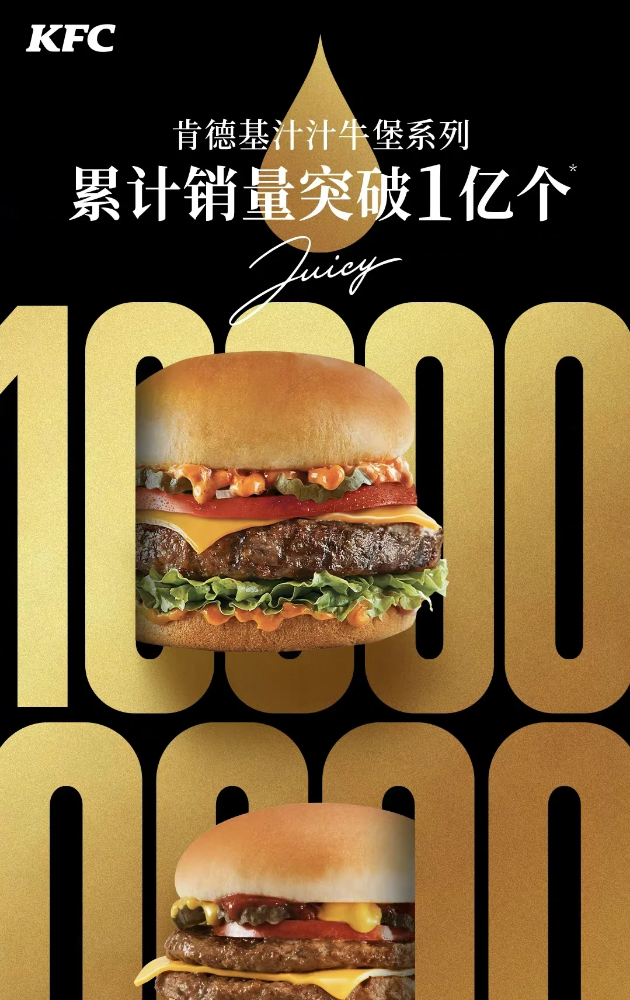
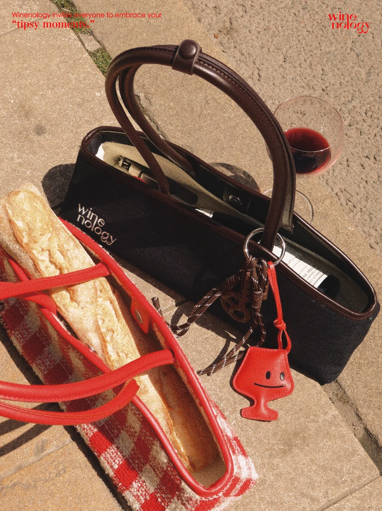
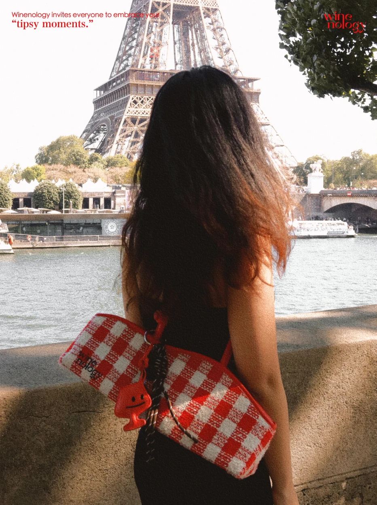
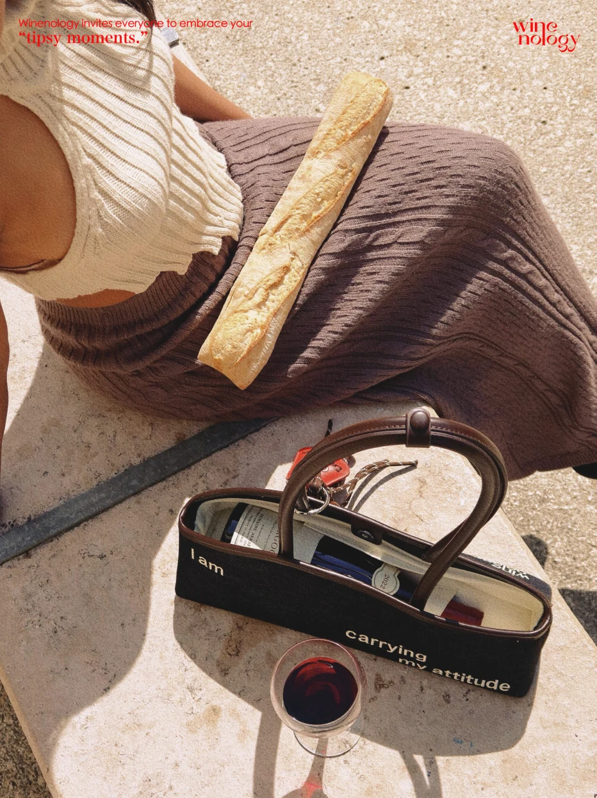
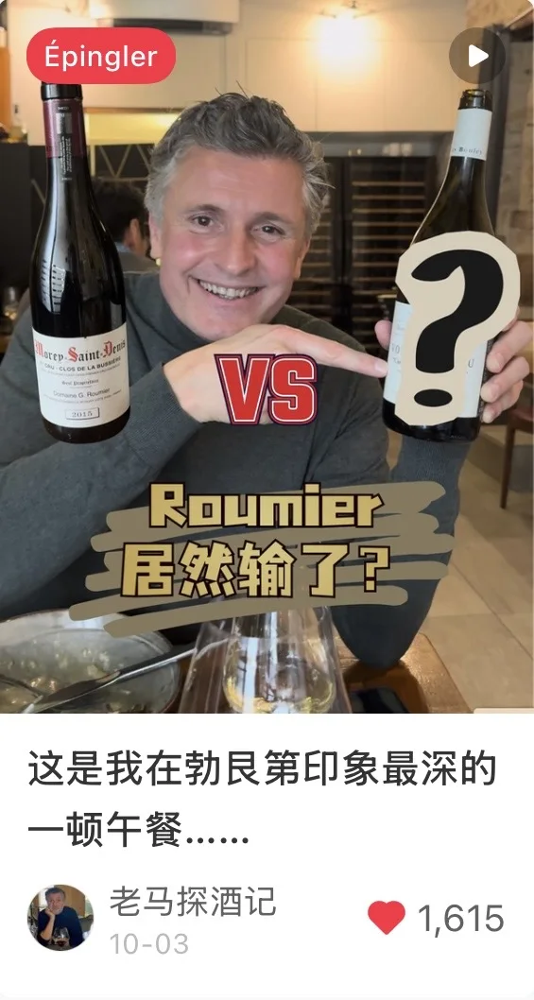
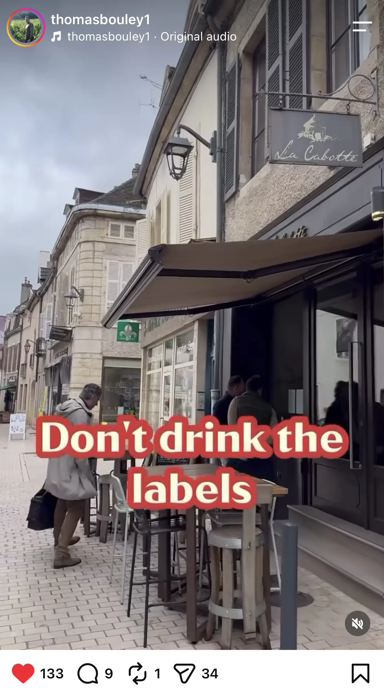
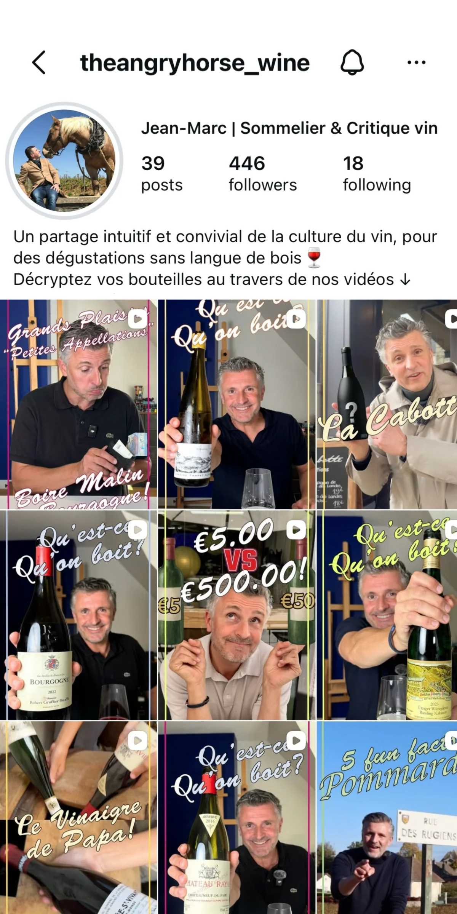

01
Corporate Scale
Led integrated marketing initiatives at Yum China, managing €2.4M in annual media investment and coordinating 5–8 agency partners across creative, media and social campaigns.
Brand & Content Marketing
Integrated Campaigns · Social Strategy · Creator Partnerships
I connect brand strategy with creative execution, from positioning and integrated campaigns to social content and creator partnerships that drive engagement and growth.
China · USA · France01
Led integrated marketing initiatives at Yum China, managing €2.4M in annual media investment and coordinating 5–8 agency partners across creative, media and social campaigns.
02
Built a wine lifestyle brand from scratch—leading positioning, product development, creative direction and creator partnerships. Also developed hands-on content workflows spanning strategy, production and organic growth.
03
China · USA · France
Educated and professionally active across China, the US and France. I adapt brand storytelling to different cultures, audiences and platforms—not just different languages.
01 · Corporate Experience
Leading integrated marketing initiatives across KFC and Pizza Hut, spanning product innovation, brand campaigns, media strategy and social activation.
KFC Beef Burger Category, KFC Prime Membership Program, KFC Original Recipe Chicken Campaigns, and Pizza Hut Delivery.
Product Innovation · Creative Campaigns · Media Strategy · Social & Influencer Marketing
Selected Project · KFC China
Category Co-lead



Partnered with Consumer Insights and Product Development teams to develop new product concepts, combining consumer research with historical sales performance. Guided product development to ensure a compelling consumer proposition and clear product USPs.
Led creative agency selection, briefing and development, shaping campaign concepts and execution. Collaborated with internal media teams to unlock IP and celebrity partnerships, while overseeing TVC and key visual production from planning to shoot.
Managed an annual media budget of approximately €2.4M across online and offline channels. Aligned media strategy with campaign objectives and guided social teams on platform-specific content, influencer selection and creator collaboration strategies to maximize campaign reach and engagement.
A five-week campaign generated 30M+ media impressions. Beef burger category market share grew from 8% to 13% in one year, with cumulative sales surpassing 100M units.
02 · Founder project
Creating a wine lifestyle brand—and its first audience—from an empty page.
Positioning · Naming · Product · Website · Organic social · Creator seeding
Brand slogan
Break the rules, not the bottle.



A playful lifestyle brand that celebrates the beauty of the tipsy moment and makes wine culture feel less formal, more expressive and more wearable.
Led positioning, naming, visual direction, product development and English website content. Extended one clear brand idea into the Wine Baguette Bag and “Chic Drinker” product family.
Targeting style-conscious urban women aged 25–35 with strong purchasing power and an affinity for luxury and lifestyle brands. Audience research showed 65.5% high-spending consumers, with interests spanning fashion, dining and travel.
Built a cost-efficient creator partnership model through strategic gifting and value exchange. Sourced, negotiated and managed 30+ influencer collaborations, keeping total spending under €1,000.
03 · Client project
Building a recognized voice in the wine industry through expert-led storytelling, cross-cultural content strategy and organic social growth.
Personal Branding · Content Strategy · Cross-Cultural Localization · Organic Growth
Project Focus



Built an end-to-end content workflow, from topic selection and scripting to filming, editing and publishing. Produced 150+ short-form videos at a consistent pace of 4–5 posts per week, balancing wine expertise with engaging storytelling.
Adapted wine expert content for Chinese, French and English-speaking audiences, tailoring hooks, storytelling and editing to each platform. Integrated AI-assisted subtitling and voiceovers to streamline multilingual production while preserving authentic visuals.
Created content that resonated with wine enthusiasts in China and earned organic recognition from French winemakers, who shared our videos with their own audiences—strengthening credibility within the wine community.
Drove growth without paid advertising through consistent publishing, platform-specific content and performance-led optimization. Grew two Chinese accounts to 5K+ and 3K+ followers within six months, while Instagram gained 400+ followers in two weeks.
Background
BA, English Language & Literature
MS, Integrated Marketing Communications
KFC & Pizza Hut brand marketing
MBA, Wine & Spirits Business
Founder & Brand Director